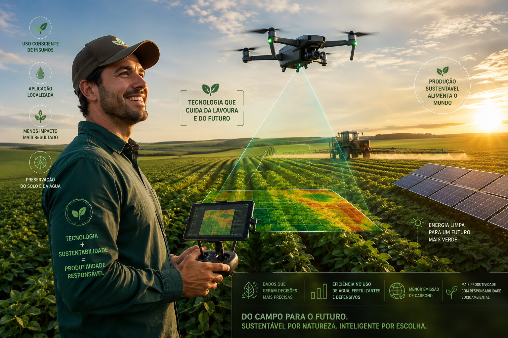

O que é a produção tecnológica?
A produção tecnológica representa a evolução da agricultura, integrando inovação, ciência e sustentabilidade. Nesse modelo, o campo se conecta com tecnologias avançadas como drones, sensores, inteligência artificial e sistemas de monitoramento em tempo real.
Com o uso dessas ferramentas, é possível analisar o solo, prever condições climáticas, identificar pragas com precisão e aplicar insumos apenas onde realmente é necessário. Isso reduz desperdícios, aumenta a eficiência e diminui os impactos ambientais.
Além disso, a utilização de energias renováveis, como a energia solar, torna o processo produtivo mais sustentável, alinhando alta produtividade com responsabilidade ambiental.
A agricultura tecnológica mostra que é possível produzir mais, com menos impacto, utilizando inteligência e inovação para garantir um futuro sustentável. É o campo conectado ao amanhã.
💡 Você sabia? Drones agrícolas podem mapear grandes áreas em poucos minutos, identificando falhas na plantação com precisão impressionante.